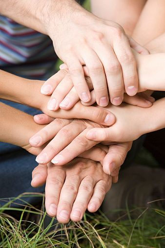
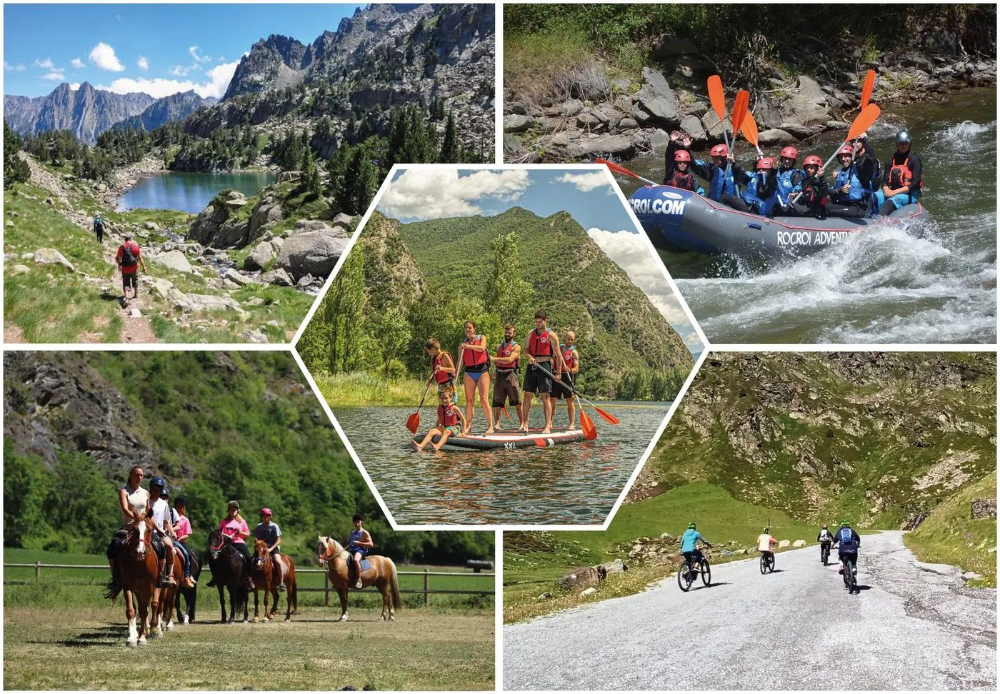
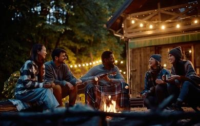
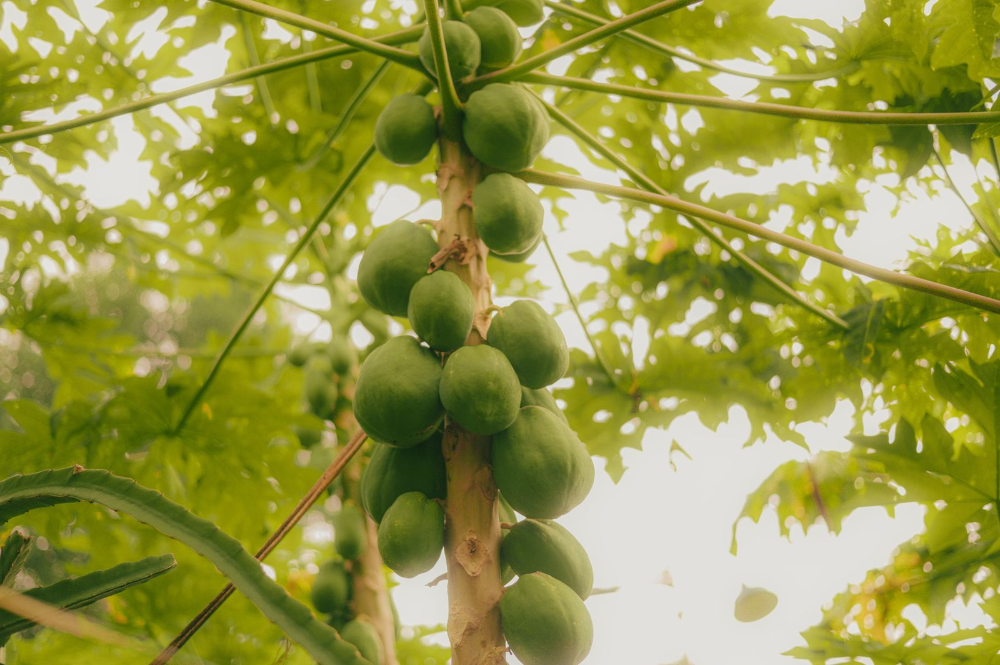
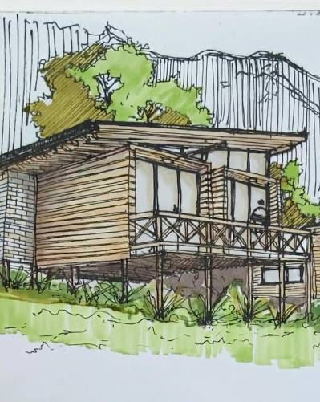
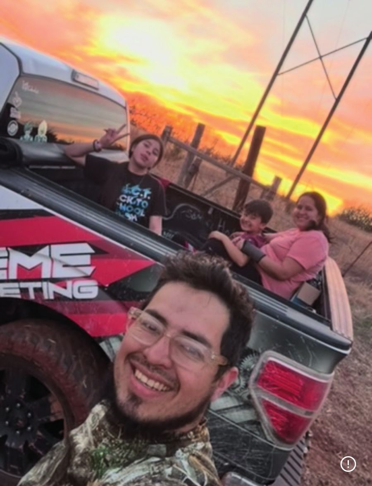

Descubrir el propósito
Generar experiencias que lleven a nuestros visitantes a descubrir y usar al máximo sus capacidades y encontrar su propósito. Que puedan renovar sus pensamientos y emociones, y valorar todo lo que hay a su alrededor.
Centro de descanso espiritual · sin ánimo de lucro
Descanso para el alma
En un mundo donde las redes y la tecnología nos alejan cada vez más de la conexión familiar y espiritual, hemos creado un lugar de desconexión donde lo importante cobra valor. Un espacio lleno de naturaleza y aventura.
Un lugar rodeado de vida, animales, árboles y ríos; paisajes maravillosos y aire puro, todo dispuesto para desconectarnos del sistema y conectarnos con Dios, su creación y sus maravillas.
Este lugar está pensado para crear espacios de conversación, esparcimiento, inspiración y creación para familias, iglesias, universidades y compañías.

Visión y misión
Hemos creado un programa de experiencias y aprendizaje donde creemos que nuestros visitantes podrán encontrar paz y restauración, y disfrutar de actividades de aventura, programas de agricultura y vida de granja. Todo dispuesto para que Dios llene de su paz, gozo y amor a cada visitante durante su estadía.
Generar experiencias que lleven a nuestros visitantes a descubrir y usar al máximo sus capacidades y encontrar su propósito. Que puedan renovar sus pensamientos y emociones, y valorar todo lo que hay a su alrededor.
Desarrollar un lugar en medio de la naturaleza, lejos del ruido de la ciudad, de la contaminación y de la rutina del trabajo, que hoy absorbe gran parte de la vida de las personas.
Que recuerden que la riqueza va más allá de los bienes materiales, del trabajo o de la posición económica. Hay algo que sobrepasa todo esto y se vive en las cosas simples de la vida.
Se llama Jesús.
Vive la experiencia
Cada familia y cada grupo es diferente. Por eso tenemos programas personalizados que llevan a cada participante a descubrir nuevas fortalezas y habilidades.
Permacultura, agricultura y granja, y cuidado de animales.
Identidad, sanidad interior, familia y vida en Cristo.
Del campo a la mesa: lo que se cosecha en la finca, se cocina y se comparte.
Canyoning, senderismo, ciclomontañismo, enduro, rafting y más.



Todo cuidadosamente diseñado para que tu experiencia marque un antes y un después. Nuevas historias, nuevos retos, nuevas ideas, y tal vez una nueva vida.

Valor agregado · Eco-sistema
Para que tu experiencia sea especial, diseñamos cabañas modulares fabricadas con técnicas de bioconstrucción: eco-sostenibles, amigables con el medio ambiente y pensadas para una completa experiencia de desconexión y paz.
Aprovechamos al máximo los materiales que se pueden volver a usar, para preservar la naturaleza y los recursos naturales.
¡Aquí todo esfuerzo cuenta!
Origen del nombre
El resultado
Personas renovadas, agradecidas con el Creador, capaces de transmitir su paz a los demás.
Familias que se aman, se apoyan y encuentran a Dios en la sencillez de la vida cotidiana, en medio de la naturaleza.

Tú también puedes ser parte de esta visión
Tus donaciones permiten que este proyecto ayude a la transformación de miles de personas: reconstrucción de matrimonios y aliento para seguir adelante. Este es un centro de salud espiritual.
Sigue nuestras redes, comparte el proyecto y acompáñanos mientras Shabatel toma forma.